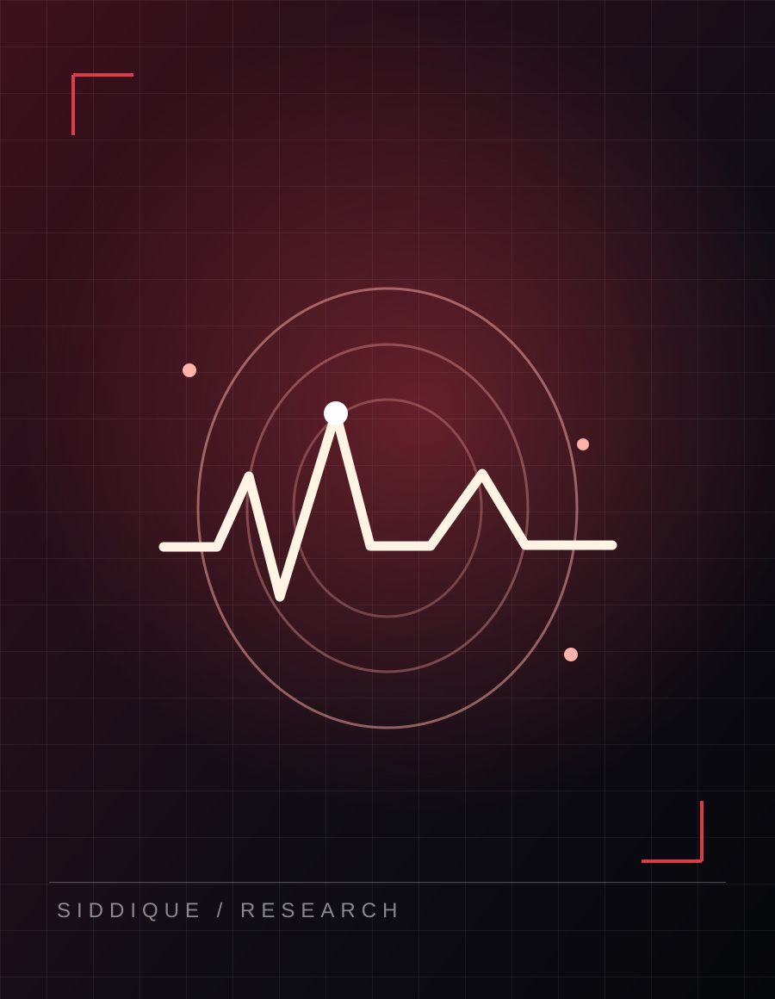

Smarter science.
Healthier livestock.
Turning complex biological signals into practical, interpretable intelligence for animal health, precision agriculture, and safer food systems.
The featured story.

AS ORIGINAL RESEARCHSCIENCE / 2026What if disease screening didn't start with a needle?
Exploring non-invasive caseous lymphadenitis screening in goats using multi-frequency bioelectrical impedance and machine learning.
Research-stage evidence; animal-held-out performance was lower (LOSO AUC 0.68), highlighting the need for external validation.
Explore the research.
Big questions. Real-world data. Research designed to move from proof of concept toward practical impact.
“Good AI doesn't replace biological expertise. It helps us ask better questions — and make better decisions.”
AFTAB SIDDIQUE, Ph.D.The research library.
A carefully curated bibliography from the September 2026 academic CV and conference inventory, alongside automatically discovered new records after deployment.
Recent highlights
Selected studies to explore first
Explore every contribution.
A note on publication status: This archive includes 39 CV-listed journal/proceedings entries, 1 online-published opinion, 12 book chapters and 63 distinct conference records. Conference records include presentations, published abstracts and proceedings, not necessarily 63 separate studies. Some historical CV records have not been independently located online; these are flagged in individual entries. Direct DOI links are provided where available; otherwise “Find record” opens a title search. About the sources ↗
In the headlines.
News, independent research coverage, university stories and professional recognition are clearly identified by source type. A curated archive through October 14, 2026—not a claim that every mention on the internet has been found.
Fresh name mentions ↗
When hosted with the included GitHub Actions setup, new matching Google News results are checked daily. Automatically found items are clearly separated from the reviewed archive.
Automatic updates activate after deployment.
Newly indexed research
OPENALEX · AUTHOR-IDENTITY MATCHEDResearch metadata is fetched using the author's public ORCID identifier. New indexed records are shown separately until bibliographic details are reviewed.
Funding the next frontier.
Collaborative funded programs, CV-documented awards and developing proposals. Award status and role are shown explicitly; unverified grants are not counted as confirmed funding.
Grant concepts & proposals under development
These are research directions and requests—not awarded grants.
Milestones that matter.
Recognitions spanning research, poultry science, interdisciplinary agriculture and doctoral achievement.
Teaching the next generation.
Current FVSU teaching alongside earlier course/laboratory support and applied AI workshops.
Mentorship is part of the mission.
Graduate advisory committees, student research training, interdisciplinary project support and scientific communication.
Ideas worth sharing.
Invited lectures, talks, keynote events, discussion panels and science outreach, with invitations that were canceled clearly identified.
The scientist.
The systems thinker.
The bigger picture.
I work where animal science, food science, biosensing and artificial intelligence intersect.
As a Research Professional at Fort Valley State University, my work centers on translating multimodal measurements — electrical impedance, radiofrequency signals, images, animal behavior and environmental data — into explainable models that can support animal-health decisions.
My longer-term goal is to make precision livestock technologies more practical, affordable and useful beyond the laboratory, while training the next generation of interdisciplinary agricultural scientists.
From sensor to signal to scientific decision.
The next discovery
starts with a conversation.
Open to research collaborations, interdisciplinary projects, speaking opportunities and academic conversations.
Start a Conversation